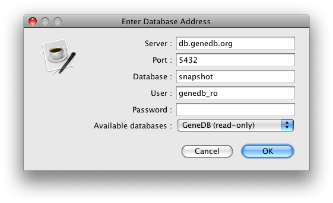

writedb_entry is a wrapper script around Artemis's ReadAndWrite entry functions, which allows export to EMBL and GFF3 formats. It can be run in 3 ways.
The default method is the 'swing' method (because that's the original behaviour), which assumes that you are running it either on your own machine or on a server with X11 forwarding setup. Any errors or login prompts will popup in a graphical user interface as windows. In this mode, if it is not on your machine or no X11 is available, then any attempts to prompt will result in exceptions. The 'console' mode is for running interactively on the shell without the need for a graphical user interface. All user-prompting (like password entry) is done inside the shell. Useful for one-offs where there is no X11 forwarding. The 'script' mode is for batch runs where you don't want any user prompting. Passwords must be supplied as a command line parameter if needed in this case.$ /Volumes/us/data/gv1/workspace/artemis/etc/writedb_entry -c "db.genedb.org:5432/snapshot?genedb_ro" -o GFF -s Tcruzi_999
read :: Tcruzi_999 write :: Tcruzi_999.gff
reading options from "/Users/gv1/.artemis_options"
done

$ writedb_entry -c "db.genedb.org:5432/snapshot?genedb_ro" -o GFF -u console -s Tcruzi_999
read :: Tcruzi_999 write :: Tcruzi_999.gff
Enter Password:
Destination format can't handle all keys/qualifiers - continue?
region can't have isObsolete as a qualifier(y/n): y
done
$ writedb_entry -c "db.genedb.org:5432/snapshot?genedb_ro" -o GFF -u script -s Tcruzi_999
read :: Tcruzi_999 write :: Tcruzi_999.gff
Desti
If there was a password needed, you would have to enter it as follows.
$ writedb_entry -c "db.genedb.org:5432/snapshot?genedb_ro" -o GFF -u script -p mypass -s Tcruzi_999
read :: Tcruzi_999 write :: Tcruzi_999.gff
Destination format can't handle all keys/qualifiers - continue? : region can't have isObsolete as a qualifier : y
done